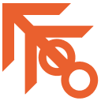

Điều khiển cảm ứng
Joystick ảo hiện tại điểm chạm, nút kỹ năng có hồi chiêu, vùng vuốt camera và chụm ngón zoom. Pinch và xoay camera không tranh nhau.
Công cụ cho Unity 6
Hai package do GaMo Tools phát triển. Một bộ lo phần điều khiển của game trên mọi thiết bị, một bộ đưa thói quen dựng hình và rigging của Blender vào Unity Editor.
Một API duy nhất cho chuột và bàn phím, tay cầm, màn hình cảm ứng. Script của bạn không cần if/else theo nền tảng.
Phím G/R/S, pie menu, constraint kiểu Blender, Dynamic Bone chạy Burst, cùng GM-Inspector và công cụ gộp mesh.
Các sơ đồ và demo trên trang được dựng lại từ logic thật của package để giải thích cách hoạt động. Đây không phải ảnh chụp Unity Editor.
True Input System v1.0.7
Script của bạn chỉ nói chuyện với TISInputBridge.Instance, không bao giờ đọc thẳng InputAction. Bridge lo phần còn lại: dựng action từ profile, nhận biết thiết bị đang dùng và nhận input từ nút ảo trên màn hình.
Profile là một ScriptableObject khai báo action và binding. Từ profile, bridge dựng InputActionAsset lúc chạy. PC và tay cầm đi qua InputAction, còn UI cảm ứng ghi trực tiếp vào registry. Cả hai nhánh gặp nhau tại cùng một API.
SwapProfile, ví dụ đi bộ sang lái xeITISInputBridge để mock input khi viết unit testBấm vào khung rồi dùng W A S D, kéo joystick ảo, hoặc cắm tay cầm và gạt cần trái. Nhân vật chỉ đọc một giá trị MoveDirection, không cần biết nó đến từ đâu.
using GaMo.TrueInputSystem;
var input = TISInputBridge.Instance;
// Giống hệt nhau trên PC, tay cầm và mobile
Vector2 move = input.MoveDirection;
Vector2 look = input.LookDelta;
if (input.IsJumping) Jump();
if (input.GetSkillAction("Skill_1")) CastFireball();
// Rung nhẹ khi trúng đòn, profile tắt rung thì tự bỏ qua
input.TryRumble(0.6f, 0.3f, 0.15f);Joystick ảo hiện tại điểm chạm, nút kỹ năng có hồi chiêu, vùng vuốt camera và chụm ngón zoom. Pinch và xoay camera không tranh nhau.
Kéo chọn hướng, nhả tay để tung chiêu, có vùng hủy và tap nhanh để tự chọn mục tiêu.
Ba lớp Tab, SubTab, Content. Nhóm nút tự tính hướng đi theo bố cục, kèm con trỏ ảo bằng cần analog.
TISTargetScanner khóa mục tiêu gần tâm màn hình, AimAssistProcess hút camera về đó. Chọn được nền tảng áp dụng.
Đọc qua SDL3 trên PC cho DualShock 4, DualSense, Switch Pro. Bật tắt ở ba mức: toàn game, profile, từng action.
TISRebindingSystem đổi phím tương tác hoặc bằng code, tự lưu JSON sau mỗi lần đổi, khôi phục từng phím hoặc tất cả.
Ba chế độ nhấn, giữ, nhả. Có input buffer, tổ hợp phím, Action Map bật tắt theo ngữ cảnh và ghi đè input khi cần.
Cửa sổ ba cột cho Action Map, binding và cài đặt nền tảng. Validate báo tên trùng và xung đột binding trước khi Generate.
Đây là cách TISDirectionalSkillButton ở chế độ DragRelease quyết định một lần chạm. Nhấn giữ nút rồi kéo.
Sự kiện trả về: chưa có lần chạm nào
Ba lớp có phím riêng nên người chơi không bị lạc. Gắn TISGamepadUIButton lên nút, TISGamepadUIButtonGroup lên cha, và RebuildNavigation() tính hướng lên, xuống, trái, phải theo bố cục.
Ba scene hướng dẫn có sẵn. Mỗi bài có mô tả, các bước setup, code mẫu sao chép được, bảng API cập nhật theo thời gian thực và nhiệm vụ trên sân chơi 3D tự tích khi bạn làm xong.
Kèm cửa sổ Documentation tiếng Việt trong Editor: API, code mẫu, FAQ và tìm kiếm.
Blender-Style Workflow
Bộ công cụ cho người làm 3D và rigging: thao tác bằng phím thay vì kéo gizmo, constraint chạy đúng thứ tự, và một Inspector làm được nhiều việc hơn. Từng tính năng bật riêng, nên bạn chỉ dùng phần mình cần.
Bấm vào khung, rồi nhấn G và rê chuột. Khối đi theo chuột mà không cần nhắm vào gizmo. Demo này cần bàn phím.
| G R S | Di chuyển, xoay, co giãn |
| X Y Z | Khóa theo trục |
| Shift + trục | Khóa theo mặt phẳng |
| Gõ số | Nhập giá trị chính xác |
| Shift khi kéo | Giảm tốc còn 20%, chỉnh được |
| Enter / chuột trái | Xác nhận |
| Esc / chuột phải | Hủy, trả về vị trí cũ |
Điều hướng cũng theo Blender: chuột giữa để orbit, Shift + chuột giữa để pan. Phím tắt tự nhường khi bạn đang dùng Terrain tool.
Rê chuột vào hướng muốn chọn. Trong Unity, bạn giữ phím tắt, lia chuột rồi thả tay. Nhấn thả nhanh thì menu ở lại để click, hoặc chọn bằng phím số.
Phím tắt, bán kính, cỡ chữ và hiệu ứng đều chỉnh được trong cửa sổ cài đặt. Copy và Paste dùng chung một phím: gõ thêm một lần để chuyển qua lại ngay tại chỗ.
Mọi công cụ trong Scene view đều hỏi chung một trọng tài là BlenderInputPriority. Mỗi hệ thống chỉ được xử lý sự kiện khi không có hệ thống ưu tiên cao hơn đang chạy. Nhờ vậy orbit không cướp chuột giữa khi pie menu đang mở, và phiên G/R/S không kẹt lại.
Nhiều target và pole target, hòa trộn theo weight, đổi tay cầm súng bằng SwitchTarget.
Quay theo cung ngắn nhất, không cần Up Axis nên tránh gimbal và lật đột ngột.

Cả chuỗi xương cùng nhìn mục tiêu, có giới hạn góc, kiểm tra vật cản và tự chọn mục tiêu.
Bắt chước vị trí và góc xoay, chế độ Delta hoặc Absolute, World hoặc Local, nhiều target.
Kéo thanh trượt để đổi hướng nhìn. Đầu xoay trước tới giới hạn, phần còn thiếu chuyển xuống cổ, rồi tới ngực và hông. Nhờ đó nhân vật quay người tự nhiên, không bẻ cổ quá mức.
Các số trong demo chỉ để minh họa. Trong Unity, giới hạn đặt riêng cho từng xương. Chế độ Weighted chia góc theo tỉ lệ thay vì ưu tiên đầu.
Constraint không tự chạy LateUpdate riêng. ConstraintScheduler dựng đồ thị phụ thuộc, nên constraint đọc Transform do constraint khác ghi luôn chạy sau, không còn trễ một frame. Vật lý tóc và vải chạy cuối để đọc đúng pose.
Tóc, đuôi, áo có vật lý. Mọi nhân vật gộp vào một manager để Job System chia việc cho các luồng.
Sphere, Capsule, Plane, Box. Capsule có thể thuôn đầu, Box có thể vát. Một collider cản được nhiều chuỗi và hiện gizmo ngay tại xương.
Gọi sự kiện theo thời gian trong Animator State, theo giây hoặc tỉ lệ, có thể kèm int, float, string, Vector, Color, enum hoặc Object.
Một Inspector thay thế, có thanh tab component nên không phải cuộn qua danh sách dài. Chọn asset là có thể sửa luôn, không cần mở phần mềm khác cho những việc nhỏ.
Atlas gộp mọi mesh đã chọn vào một mesh và một atlas texture, hỗ trợ LODGroup. Grid chia map thành ô, gộp mesh Static cùng material trong từng ô, nên giữ nguyên material gốc và culling vẫn hoạt động.
Tools › GaMo ToolKit › True Input System › Setup, tạo profile và khai báo action.GaMo ToolKit › True Input System › TIS Setup, rồi kéo profile vào Inspector.TISInputBridge.Instance trong Start() và đọc input trong Update().Blender-Style Workflow vào Assets.Tools › GaMo ToolKit › Blender Style Workflow › Setting Windown.